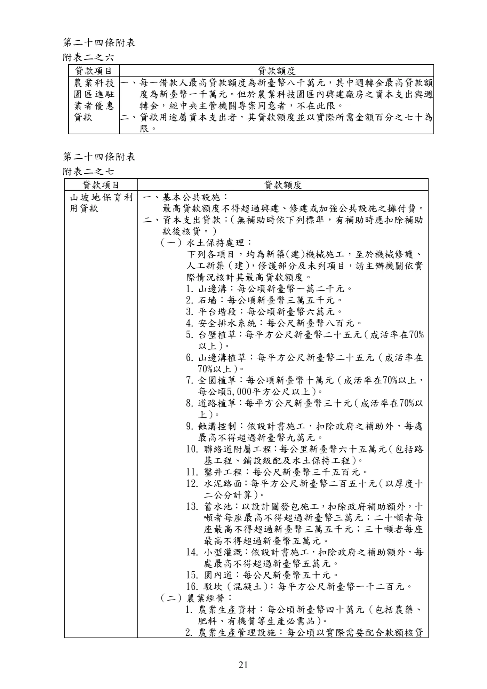

辦理政策性農業專案貸款辦法
手冊頁：21 PDF頁：23／359
{kind=link}

展開查看PDF原始文字層
複雜表格欄列可能因文字層順序失真，請搭配原頁預覽查閱。
第二十四條附表 附表二之六 貸款項目 貸款額度 農業科技 園區進駐 業者優惠 貸款 一、每一借款人最高貸款額度為新臺幣八千萬元，其中週轉金最高貸款額 度為新臺幣一千萬元。但於農業科技園區內興建廠房之資本支出與週 轉金，經中央主管機關專案同意者，不在此限。 二、貸款用途屬資本支出者，其貸款額度並以實際所需金額百分之七十為 限。 第二十四條附表 附表二之七 貸款項目 貸款額度 山坡地保育利 用貸款 一、基本公共設施： 最高貸款額度不得超過興建、修建或加強公共設施之攤付費。 二、資本支出貸款： （無補助時依下列標準，有補助時應扣除補助 款後核貸。） （一）水土保持處理： 下列各項目，均為新築(建)機械施工，至於機械修護、 人工新築（建） ，修護部分及未列項目，請主辦機關依實 際情況核計其最高貸款額度。 1. 山邊溝：每公頃新臺幣一萬二千元。 2. 石墻：每公頃新臺幣三萬五千元。 3. 平台堦段：每公頃新臺幣六萬元。 4. 安全排水系統：每公尺新臺幣八百元。 5. 台壁植草 ： 每平方公尺新臺幣二十五元 （成活率在70% 以上） 。 6. 山邊溝植草：每平方公尺新臺幣二十五元（成活率在 70%以上） 。 7. 全園植草：每公頃新臺幣十萬元（成活率在70%以上， 每公頃5,000平方公尺以上） 。 8. 道路植草 ： 每平方公尺新臺幣三十元 （成活率在70%以 上） 。 9. 蝕溝控制：依設計書施工，扣除政府之補助外，每處 最高不得超過新臺幣九萬元。 10. 聯絡道附屬工程 ： 每公里新臺幣六十五萬元 （包括路 基工程、鋪設級配及水土保持工程） 。 11. 鑿井工程：每公尺新臺幣三千五百元。 12. 水泥路面 ： 每平方公尺新臺幣二百五十元 （以厚度十 二公分計算） 。 13. 蓄水池：以設計圖發包施工，扣除政府補助額外，十 噸者每座最高不得超過新臺幣三萬元；二十噸者每 座最高不得超過新臺幣三萬五千元；三十噸者每座 最高不得超過新臺幣五萬元。 14. 小型灌溉：依設計書施工，扣除政府之補助額外，每 處最高不得超過新臺幣五萬元。 15. 園內道：每公尺新臺幣五十元。 16. 駁坎（混凝土） ：每平方公尺新臺幣一千二百元。 （二）農業經營： 1. 農業生產資材：每公頃新臺幣四十萬元（包括農藥、 肥料、有機質等生產必需品） 。 2. 農業生產管理設施：每公頃以實際需要配合款額核貸